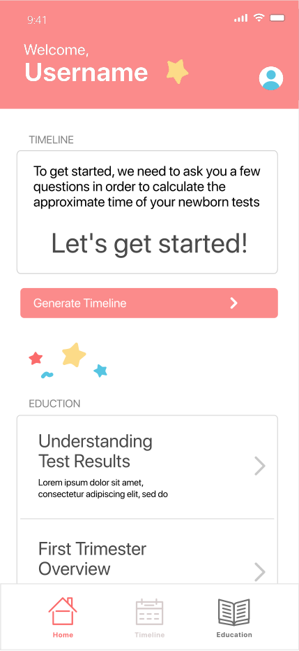
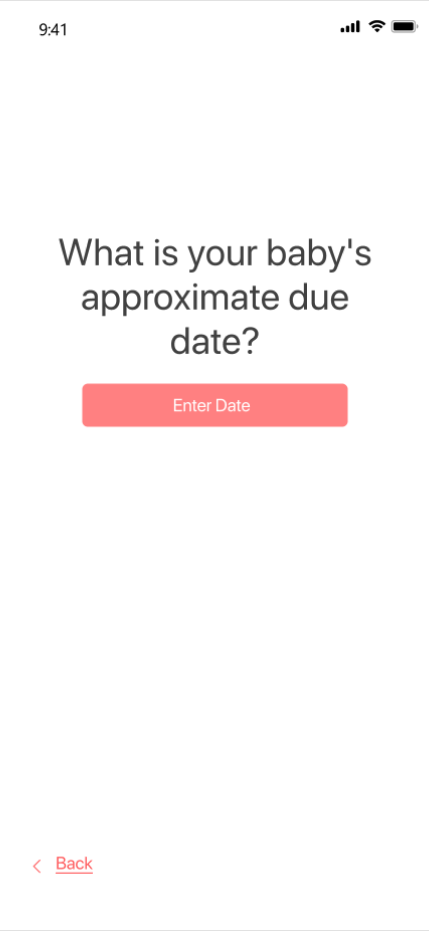
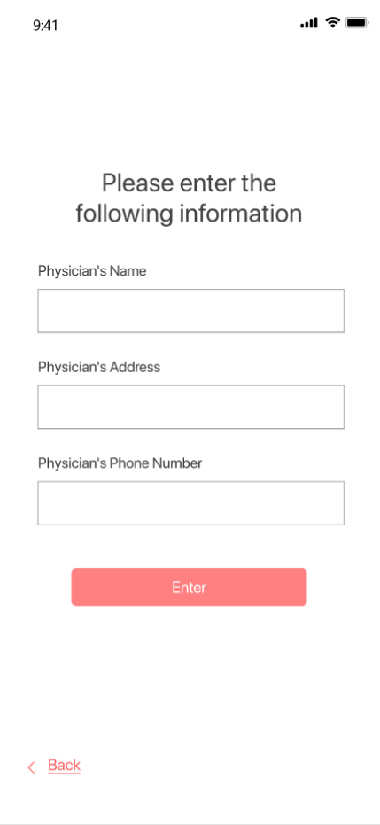
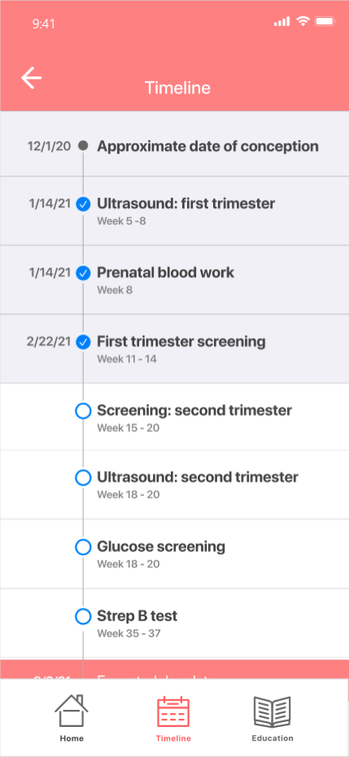
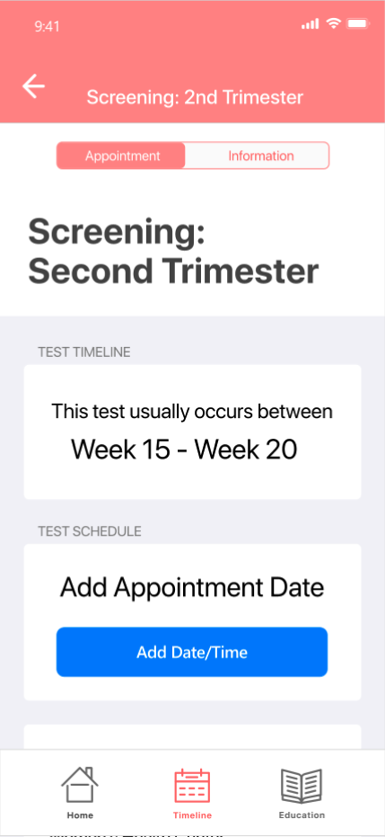
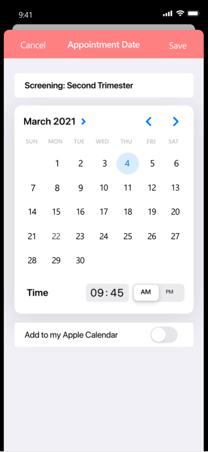

Usability Testing
Sample Quantitative Time on Task
Brand/Project:
The Ohio State University, NatalReady App, Healthcare
Role:
UX Designer/Researcher
Date:
Q2 2021
Context:
After designing an application for tacking newborn testing, I needed to assess how usable the design was with a formal usability testing protocol.
The Problem
I had designed a high-fidelity prototype of an application but I needed to quantitatively measure if a natal test tracking app was usable.
* Additional Considerations:
- This usability testing needed to be conducted in the midst of the Covid-19 pandemic and all recruiting and testing had to be conducted virtually.
The Solution
Identify core tasks to measure, recruit participants, and analyze results.
Testing Logistics
Here are some of the main points of action for getting the usability test going
- Click through prototype created in Figma
- Five participants recruited
- Prototype shared with participants and interactions recorded over zoom
Usability Measurements
While asking users to do a specific task in the app, these are the metrics I set out to measure
- Time on task (learnability)
- Task success
- Errors
- Obstacles
- User Experience
Task #1: Generate timeline
One of the main functions of this app was to track a pregnant person’s gestational timeline. Because of this, I wanted to ensure users were able to easily generate a timeline.



This task was broken into steps. I asked each participant to complete each step and measured how long this took
Steps:
- Find generate timeline button
- Enter approximate due date
- Add physician contact info (optional)
Individual Step Duration (In seconds)
| Step 1 | Step 2 | Step 3 | |
|---|---|---|---|
| Participant 1 | 80 | 10 | 20 |
| Participant 2 | 1 | 11 | 19 |
| Participant 3 | 1 | 18 | 18 |
| Participant 4 | 4 | 25 | 14 |
| Participant 5 | 2 | 86 | 78 |
For the overall task, time, task success, errors, and obstacles were recorded
| Total Time | Task Success | Errors | Obstacles | |
|---|---|---|---|---|
| Participant 1 | 110 | Y- Needed intervention | Used Xd home button | Couldn’t find generate timeline button |
| Participant 2 | 31 | Y | none | none |
| Participant 3 | 37 | Y | none | none |
| Participant 4 | 43 | Y | none | none |
| Participant 5 | 166 | Y | none | None, participant took long pauses to comment on the prototype |
In addition to the above, recommendations and input were solicited from the participants
Recommendations:
- Clarify information privacy
- Add physician’s email to contact info collected
- Make generate timeline button more obvious
- Change date of conception to due date
Participant Input:
- Most participants completed this task
- The biggest obstacle was finding the “Generate Timeline” button
- All Participants chose to add their physician’s contact info
Task #2: Add appointment date for second trimester screening
Another function of this app was to allow prospective parents to add and track newborn screenings. To test this functionality I asked participants to create a new test for their timeline



Here are the steps and their duration
Steps:
- Pull up second trimester screening
- Click add “Date/Time”
- Click “Save”
Individual Step Duration (In seconds)
| Step 1 | Step 2 | Step 3 | |
|---|---|---|---|
| Participant 1 | 54 | 2 | 6 |
| Participant 2 | 30 | 6 | 11 |
| Participant 3 | 2 | 2 | 4 |
| Participant 4 | 8 | 9 | 15 |
| Participant 5 | 5 | 14 | 77 |
Overall task time, task success, errors, and obstacles
| Time | Task Success | Errors | Obstacles | |
|---|---|---|---|---|
| Participant 1 | 62 | Y- Needed intervention | Used Xd home button | Couldn’t find test page |
| Participant 2 | 47 | Y | Test name recall | Possible confusion with wording “screening: second trimester” |
| Participant 3 | 8 | Y | none | Would like the test buttons on the timeline page to be more clearly designated as links |
| Participant 4 | 32 | Y | none | none |
| Participant 5 | 96 | Y | none | Got confused by the default date setting in the “add date/time” section, participant took long pauses to comment on the prototype |
In addition to the above, recommendations and input were solicited from the participants
Recommendations:
- Make links in the timeline section more obviously “link-like”
- When adding appointment date one participant recommended adding a highlighted range to the calendar to note when a test usually occurs
Participant Input:
- Participants were not sure if the tests in the timeline section were clickable links
- Some participants struggled to recall the test name